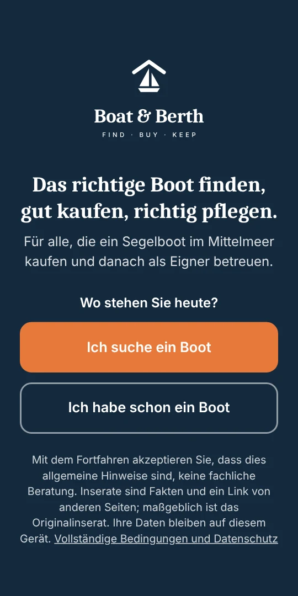
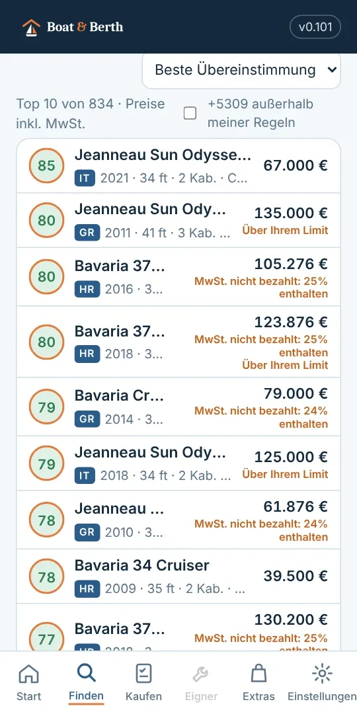
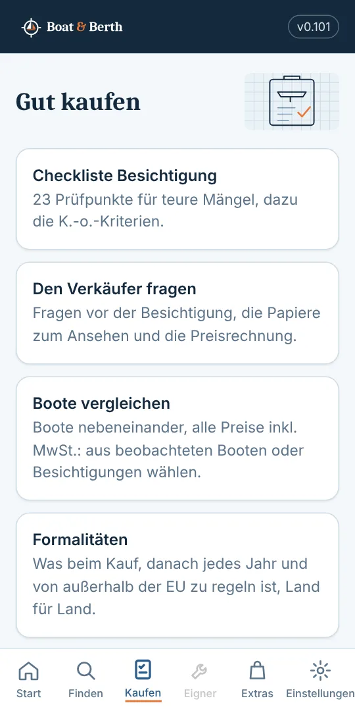
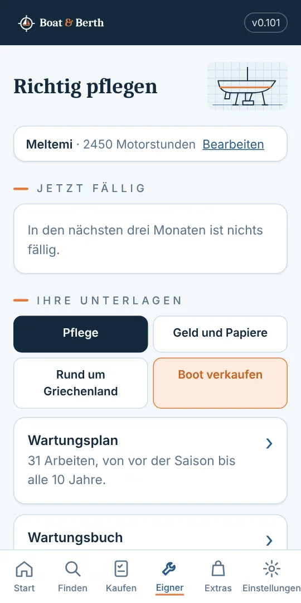
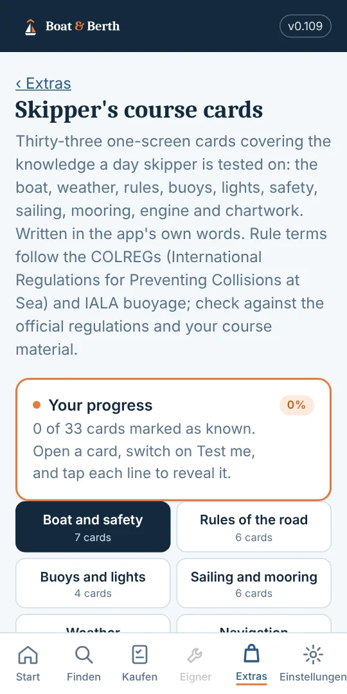
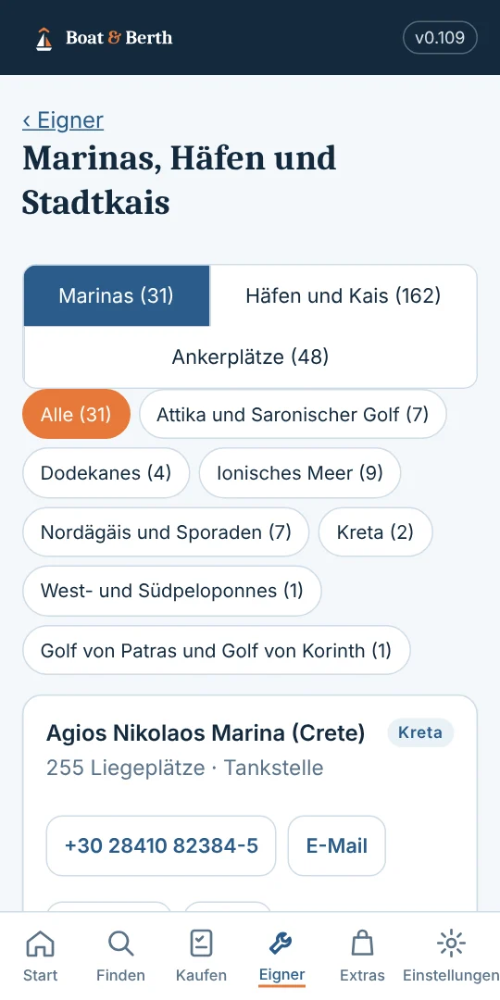
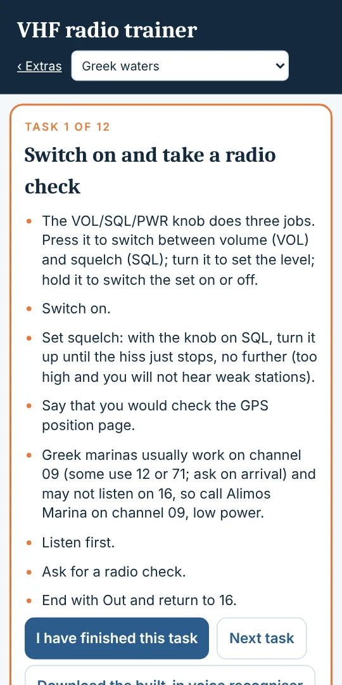

Das richtige Boot finden,gut kaufen,richtig pflegen.
Eine App für Android und iPhone für den Kauf und den Besitz eines Segelboots im Mittelmeer.
Kostenlos nutzbar, mit In-App-Käufen für Extras.

Boote zum Verkauf, für Sie sortiert
- Beantworten Sie zehn Fragen zu Ihrem Budget, der gewünschten Größe und dem, was Ihnen wichtig ist.
- Jedes Boot erhält eine Bewertung nach Ihren Antworten, mit den wahrscheinlichen Arbeiten und einem fairen Preis.
- Jedes Boot führt zur Originalanzeige. Die App speichert nur die Fakten: keine Fotos, keinen Anzeigentext.

Gut kaufen
- Eine Besichtigungs-Checkliste, die die teuren Probleme findet, bevor Sie zahlen.
- Fragen an den Verkäufer und die Unterlagen, die Sie sehen sollten.
- Kosten im ersten Jahr und die Formalitäten jedes Landes, Schritt für Schritt.

Richtig pflegen
- Ein Wartungsplan, der zeigt, was fällig ist, nach Datum und nach Motorstunden.
- Ein Logbuch der Arbeiten, Kosten und Fotos, und eine Wartungshistorie zum Drucken.
- Marinas und Häfen, Anleitungen für die Arbeiten und die jährlichen Steuern und Gebühren.

Genauer hingesehen



Außerdem in der App
Lernkarten für Skipper
Dreiunddreißig Lernkarten zum Day-Skipper-Lehrplan, mit Zeichnungen und Testmodus.
UKW-Funktrainer
Ein Übungsfunkgerät mit DSC: Not-, Dringlichkeits-, Sicherheits- und Routinerufe, beim Sprechen bewertet.
Karten zum Drucken
Gutachter-Karten, eine Motorkarte und eine Mayday-Karte mit Bootsname und Rufzeichen.
Suche nach Modell
Wählen Sie Marke und Modell und sehen Sie alle, die im Mittelmeer zum Verkauf stehen, mit den geforderten Preisen.
Sichern und wiederherstellen
Speichern Sie Ihre Aufzeichnungen in einer Datei, in Google Drive oder wo Sie möchten, und holen Sie sie auf ein neues Telefon zurück.
Ihr Boot verkaufen
Geben Sie eine private Anzeige mit Ihrer Wartungshistorie auf, gesehen von Käufern, die ein Boot wie Ihres suchen.
Kostenlos starten, Pläne bei Bedarf
Boote finden, die Länderratgeber und der Wartungsplan sind kostenlos. Ein Plan öffnet die Werkzeuge für Ihre jeweilige Phase.
Kaufpass
€24.99 für 6 Monate
Was Sie bieten sollten, das Gutachten als Preisargument, die zu prüfenden Papiere und die Modellsuche.
Eignerplan
€19.99 pro Jahr
Erinnerungen, der Dokumententresor, Kosten Jahr für Jahr, die Wartungshistorie und die Sicherung.
Komplettplan
€39.99 pro Jahr
Beide Pläne und alle Extras: die Lernkarten, der UKW-Trainer und die Kartenpakete.
Fragen
Ist Boat & Berth kostenlos?
Ja. Boote finden, die Länderratgeber und der Wartungsplan sind kostenlos. Ein Plan öffnet die Werkzeuge für Ihre Phase: der Kaufpass, der Eignerplan oder der Komplettplan. Es gibt keine Werbung anderer Firmen.
Woher kommen die Boote?
Aus den öffentlichen Anzeigen von Bootsbörsen und Maklern. Die App behält nur die Fakten (Modell, Baujahr, Länge, Preis und Ort) und einen Link zur Originalanzeige, über die Sie den Verkäufer kontaktieren.
Welche Länder sind dabei?
Griechenland, Kroatien, die Türkei, Zypern, Malta, Italien, Spanien und Frankreich, jeweils mit Kosten, Marinas, Formalitäten und einem Segelglossar. Boote, die anderswo im Mittelmeer zum Verkauf stehen, werden ebenfalls gezeigt.
Verkauft Boat & Berth Boote?
Nein. Die App verkauft keine Boote, nimmt keine Provision und vertritt weder Käufer noch Verkäufer. Sie hilft Ihnen, ein Boot einzuschätzen, und führt Sie zur Originalanzeige. Eigner können auch eine private Anzeige aufgeben.
Brauche ich ein Konto?
Nein. Ihre Antworten, Aufzeichnungen und Fotos bleiben auf Ihrem Telefon, und Sie können sie in einer eigenen Datei sichern. Eine Anmeldung per E-Mail ist nur für eine private Anzeige nötig.
Wann gibt es die App?
Bald bei Google Play für Android, danach im App Store für das iPhone.
Ist das eine professionelle Beratung?
Nein. Es sind allgemeine Hinweise aus Erfahrung und öffentlichen Quellen. Lassen Sie das Boot vor dem Kauf begutachten und die Papiere von einer Fachperson prüfen.
Acht Länder
- Griechenland
- Kroatien
- Türkei
- Zypern
- Malta
- Italien
- Spanien
- Frankreich
Kosten, Marinas, Formalitäten und ein Segel-Glossar für jedes Land.
Sieben Sprachen
- English
- Deutsch
- Français
- Italiano
- Español
- Nederlands
- Ελληνικά
Ihre Aufzeichnungen bleiben auf Ihrem Telefon. Zum Finden, Kaufen und Pflegen ist kein Konto nötig.